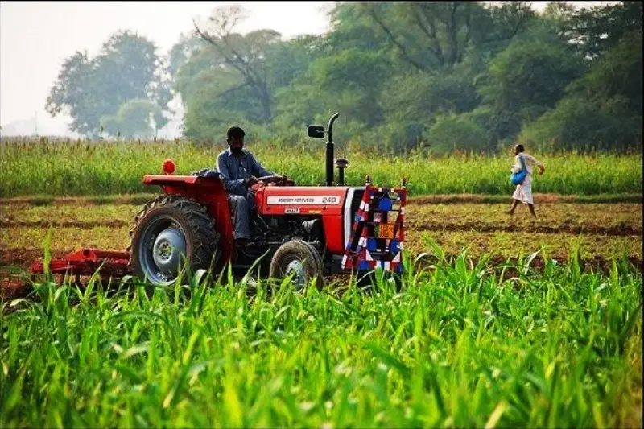

Modern agriculture technology is transforming farming with innovative tools and data-driven
techniques to improve efficiency, productivity, and sustainability. 🌾🚜
Precision agriculture uses sensors, AI, and GPS systems to optimize planting, irrigation, and
harvesting. Farmers can analyze soil conditions, monitor crop health, and apply fertilizers only
where needed, reducing waste and environmental impact. Drones and satellite imaging provide
real-time field analysis, helping detect diseases and predict weather changes.
Hydroponics and vertical farming allow crops to grow without soil, using nutrient-rich water
solutions and stacked layers in urban environments. These technologies maximize space and
resource efficiency, especially in regions with limited arable land. Smart irrigation systems,
like drip irrigation and automated sprinklers, conserve water by delivering the precise amount
needed for each plant.
AI-powered robotic harvesters automate picking, sorting, and packaging crops, reducing labor
costs and increasing speed. Autonomous tractors and smart farming equipment can plant, plow, and
spray fields with high precision. Additionally, biotechnology enables genetically improved seeds
that are resistant to drought, pests, and diseases.
These innovations enhance food security, reduce environmental impact, and increase productivity,
making modern agriculture more efficient and sustainable for the future. Want to integrate these
concepts into a visually creative webpage? I’d love to help design an interactive farming tech
showcase! 🚀
